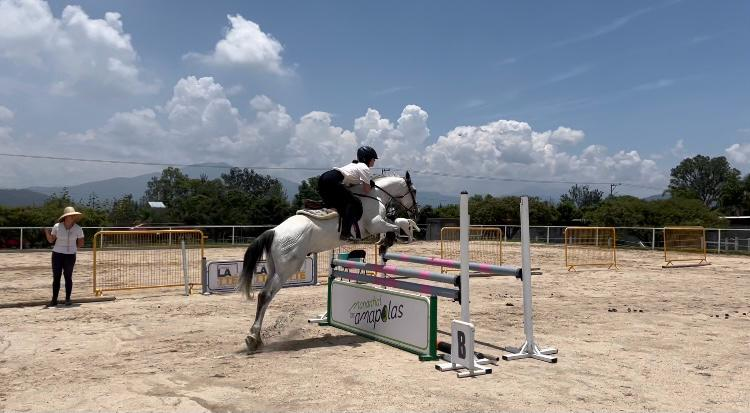
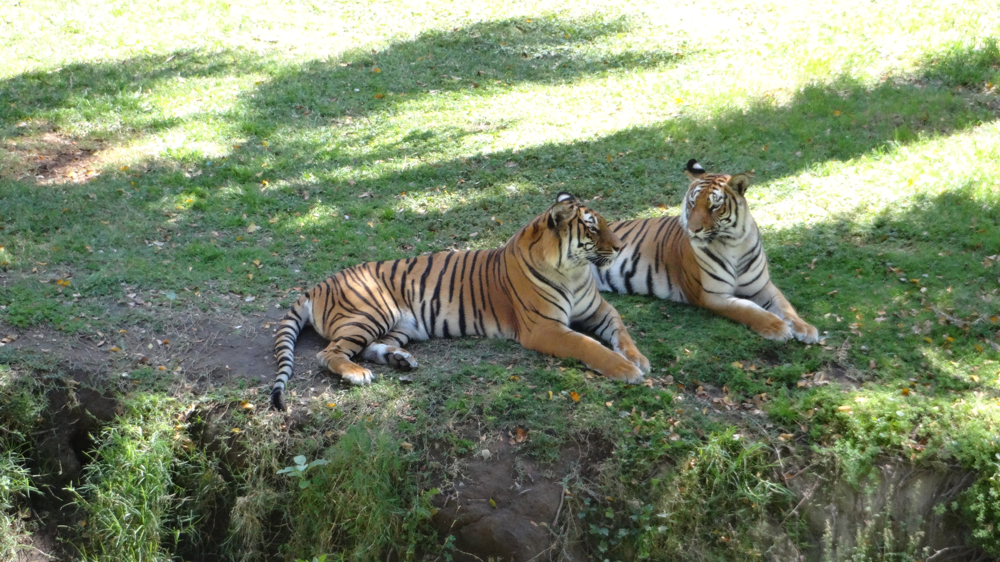
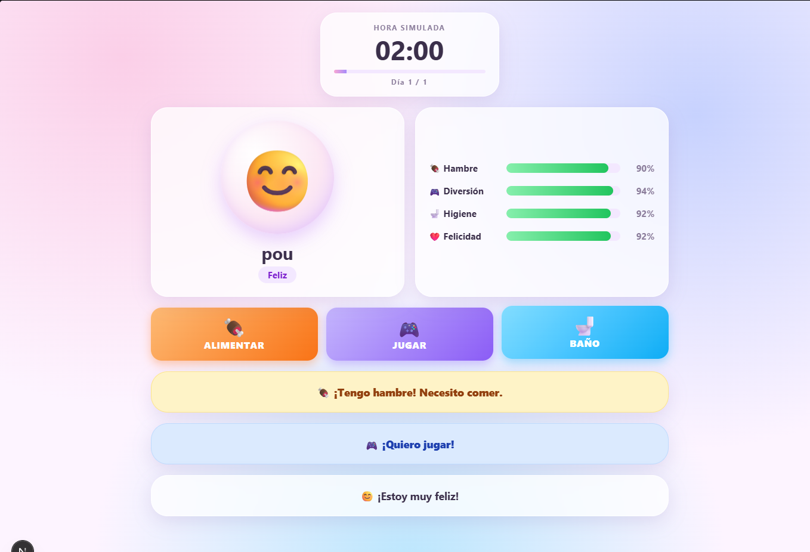

Habilidades técnicas
- Java
- HTML
- Git
- SQL
Algunas habilidades, las cuales he ido adquiriendo a lo largo de mi formación académica y experiencia práctica.
Últimamente me han gustado mucho las series coreanas, me gusta lo dramáticas que son

Practiqué equitación desde los 6 hasta aproximadamente los 16 años. Es mi deporte favorito, aunque ya no lo practico. :((

me gusta la fotografia

Este proyecto es un juego web de Tamagotchi hecho con Next.js. El usuario crea a su mascota, la cuida durante un día virtual y debe mantener sus estadísticas de hambre, diversión y limpieza en niveles aceptables para que no se enferme ni termine mal. A lo largo del juego puede alimentar, jugar y bañar a la mascota, mientras aparecen eventos aleatorios y la simulación avanza cada cierto tiempo hasta llegar al final del día.


instagram: toro_regina y github: regitoro
Mi GitHub